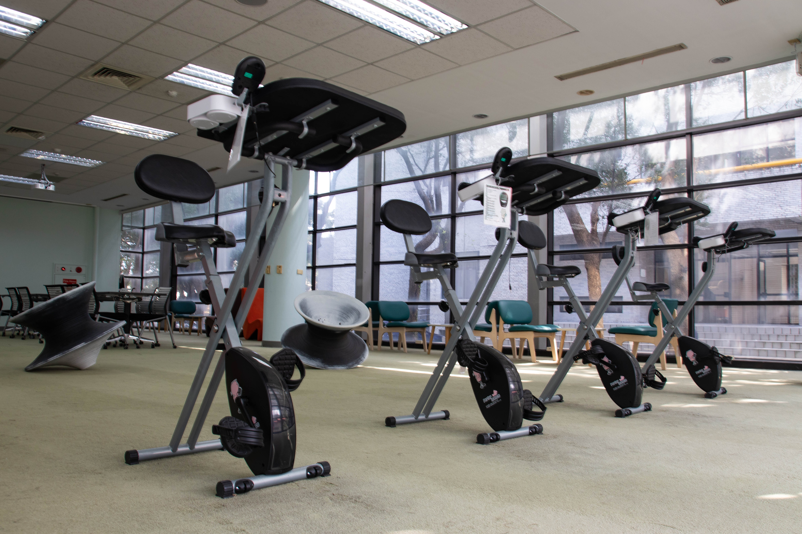

第六站：活力閱讀區
在閱讀風格日漸多元的今日，閱讀也能充滿動感與趣味。這裡設置了無噪音腳踏車，讓你邊運動邊閱讀；
造型特殊的陀螺椅既是藝術裝置，也是放鬆心情的大玩具。繽紛的休閒座椅則提供學生們一個舒適自在的休憩空間。
此區亦為影音放映與開放式研討活動的重要場域，將閱讀與生活巧妙結合。
在閱讀風格日漸多元的今日，閱讀也能充滿動感與趣味。這裡設置了無噪音腳踏車，讓你邊運動邊閱讀；
造型特殊的陀螺椅既是藝術裝置，也是放鬆心情的大玩具。繽紛的休閒座椅則提供學生們一個舒適自在的休憩空間。
此區亦為影音放映與開放式研討活動的重要場域，將閱讀與生活巧妙結合。